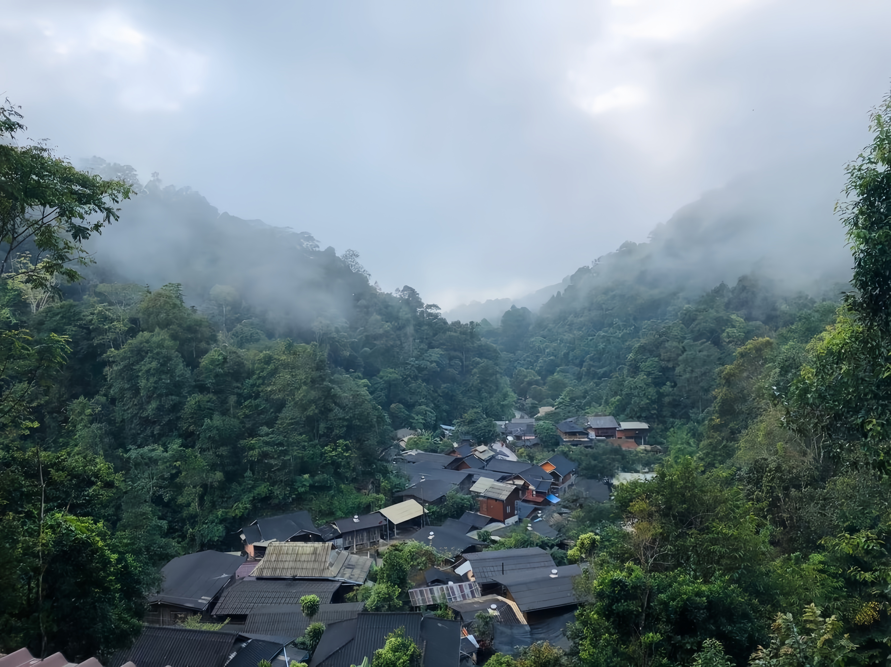

แม่กำปอง
เป็นวัดที่มีความสำคัญสูงสุดแห่งหนึ่งของจังหวัดเชียงใหม่ โดดเด่นด้วยองค์พระธาตุดอยสุเทพสีทองอร่าม และเป็นจุดชมวิวเมืองเชียงใหม่ที่สวยงาม
- ที่อยู่ : ตำบลห้วยแก้ว อำเภอแม่ออน จังหวัดเชียงใหม่
- พิกัด : ดูบน Google Maps
- เปิดให้เข้าชม : เวลาเปิด-ปิด แตกต่างกันออกไปในแต่ละร้านค้า
- เว็บไซต์ : -